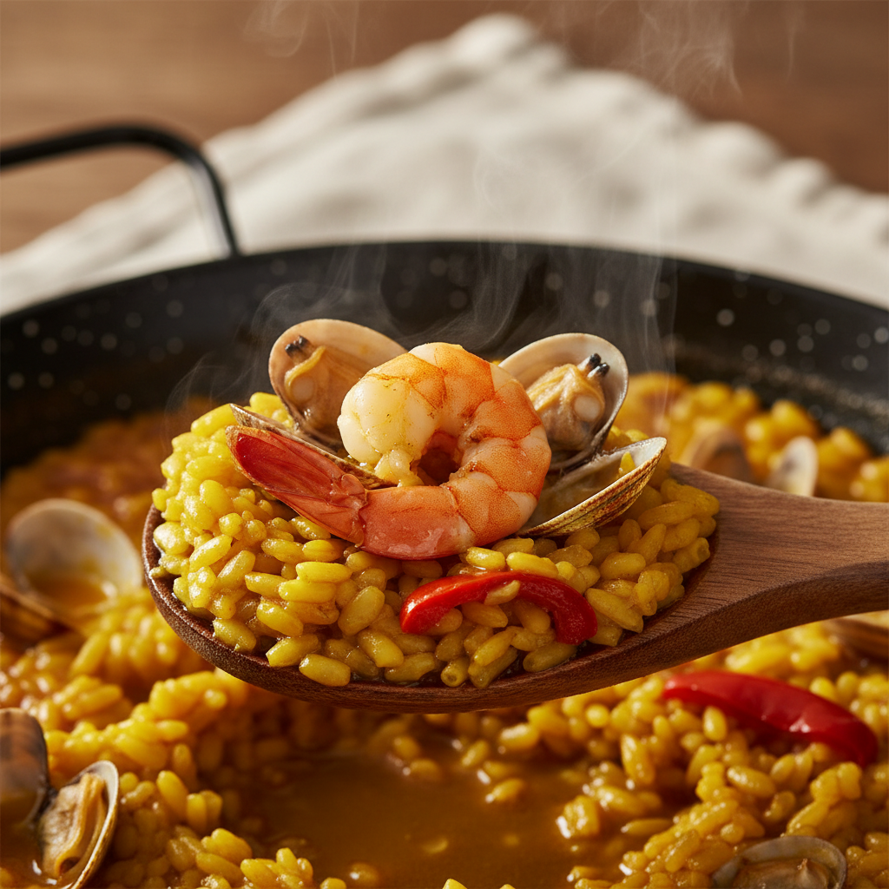

Plato signature
Paella melosa con bogavante
Plato signature de la casa, uno de los más recomendados por nuestros clientes en Google y Tripadvisor. Servido en su punto justo de melosidad.
Min. 2 pers.
Precio según mercado